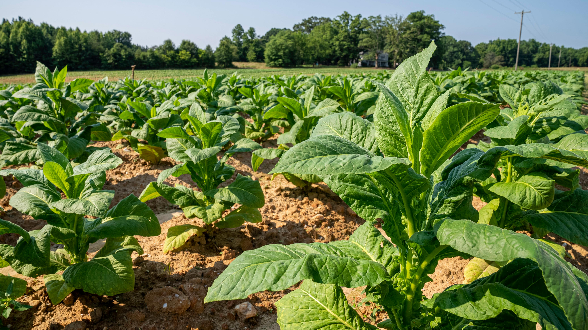

About Green Saver Market
Our Story
Green Saver Market was founded in 2015 with a simple mission: to connect local farmers with customers who value fresh, sustainable produce. What started as a small farmer’s market stand has grown into a thriving business that serves the entire community.
Our founder, Sarah Green, grew up on a family farm and witnessed the challenges that small farmers face in getting their produce to market. She created Green Saver Market to bridge the gap between farmer and consumer, ensuring fair prices for producers and access to the freshest produce for customers.
Our Mission
At Green Saver Market, we’re committed to promoting sustainable, eco-friendly farming practices that protect our environment while producing the healthiest, most nutritious food possible.
We believe that everyone deserves access to fresh, locally grown produce that hasn’t traveled thousands of miles to reach their plate. By supporting local farmers and reducing food miles, we’re helping to create a more sustainable food system for our community and our planet.
Our Values
Sustainability
We practice eco-friendly farming methods and sustainable business practices to protect our environment.
Community
We support local farmers and build strong relationships with our customers and community partners.
Quality
We source organic produce, ensuring that every product we offer meets our high standards.
Our Team
Sarah Green
Founder & CEO
Sarah’s passion for sustainable agriculture drives our mission. She’s the heart and soul of Green Saver Market and still leads hands-on from the field.

Michael Johnson
Head of Operations
Michael ensures that our operations run smoothly, from farm visits to order fulfillment. His logistics leadership helps maintain quality and reliability.

Lisa Chen
Farmer Relations
Lisa works directly with our network of over 30 local farmers. She coordinates harvesting schedules and provides training in sustainable farming practices.
Join the Green Saver Community
We’re always looking for new customers, suppliers, and community partners who share our passion for sustainable, locally sourced food. Whether you’re a customer or a farmer, we’d love to hear from you.